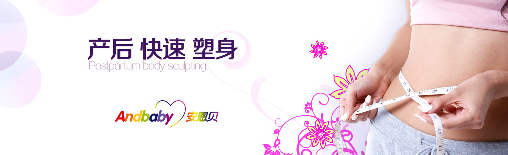

安贝儿产后修复的特点
中医调理，中华国粹，妇科圣手提倡人与自然和谐统一，从内而外，修身养心，安贝儿采用了包含产后中草药、经络调理等中医调理方案，引进全球领先的产后修复设备，为妈妈们定制全方位的完美个性产后修复方案，在兼顾安全、有效、绿色，不影响哺乳的前提下，着重于产后气血恢复和健康调理，尽快修复并重塑完美体形，让您由内而外，神采照人、更健康、更窈窕、更自信；
问：产后修复调理跟平时的减肥瘦身，丰胸美体有什么不同？
答：有很大不同，产后修复调理侧重于产后气血恢复和健康调理，更有针对性的对产后出现的形体问题进行修复并重塑完美体形，在专业性、安全性上有着更高的要求。
问：产后瘦身可以只减一个部位吗？有什么好方法？
答：可以。安贝儿的课程是有针对性的，可以选择任何一个身体部位来进行局部修复课程。
问：是不是所有的妈妈都要产后修复？
答：是的，首先产后排毒对于每位生产过的妈妈都是必要的，对于补气血、疏风寒、加速排毒（恶露）和防治月子病有很大功效。而且就算没有体重困扰的妈妈也会因为怀孕产生的妊娠纹及腹部腿部松弛而需要进行局部的产后修复。
问：产后多年的我，也可以恢复窈窕身型吗？
答：许多妈妈由于产后忙于照顾baby一直没有瘦身，导致身材走样，她们误以为以后就难以恢复从而放弃了恢复身材的努力。安贝儿针对这些妈妈们有专门的产后修复课程，不但能够帮助您恢复美好身材，而且还能帮助你解决很多月子中遗留的问题哦！